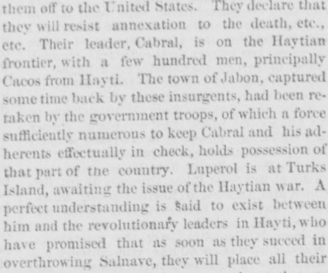
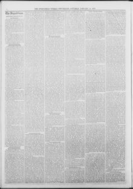

A perfect understanding is Said to exist between him and the revolutionary leaders in HaytiSe dice que existe un perfecto entendimiento entre él y el
Springfield Weekly Republican. Springfield, Mass., January 15, 1870. Page 4. Published by Samuel Bowles and Son. A weekly newspaper, 1851–1946.Springfield Weekly Republican. Springfield, Mass., 15 de enero de 1870. Página 4. Publicado por Samuel Bowles and Son. Periódico semanal, 1851–1946. View the originalVer el original


See the full pageVer la página completaAccording to the Springfield weekly Republican on January 15, 1870, President Baez issued a proclamation directing district commandants to arrange a popular vote on the annexation treaty, which was strongly favored in city areas like San Domingo, Porto Platte, and Santiago, but opposed by rural populations fearing subjugation. The newspaper reported that Luperol was at Turks Island awaiting the outcome of the Haytian war, supported by revolutionary leaders who promised their resources against President Baez if they successfully overthrew Salnave. Additionally, the text noted that local resistance to annexation stemmed partly from the plan to admit the region as a territory rather than a state, a condition Gen. Babcock had communicated to Baez as non-negotiable.Según el Springfield weekly Republican del 15 de enero de 1870, el presidente Báez promulgó un bando ordenando a los comandantes de armas celebrar una consulta plebiscitaria sobre el tratado de anexión, la cual gozaba de amplio favor en urbes como Santo Domingo, Puerto Plata y Santiago, pero hallaba resistencia en los campos por temor a una nueva dominación foránea. El rotativo indicaba que Luperón [Luperol] aguardaba en las islas Turcas el desenlace de la contienda haitiana, respaldado por jefes revolucionarios que empeñaron su concurso bélico contra el presidente Báez si lograban derrocar a Salnave. Asimismo, se señalaba que la oposición interna nacía en parte de la pretensión de anexar el país en calidad de simple territorio y no como Estado de la Unión, condición que el general Babcock transmitió a Báez como innegociable.
FULL TEXT:TEXTO COMPLETO:
The San Domingo Property.La propiedad de Santo Domingo.
While Mr Sumner's committee is considering the San Domingo annexation treaty, a hundred editors and correspondents are exploring for all the facts that can be got at about the undivided half of a great island which will come to us if the treaty is ratified. The extent of the Dominican part of Hayti is uncertain, but cannot well be less than 20,000 square miles. The population is a mixture of Spanish, Indian, negro and French, and the whole number is not more than 150,000. They are now, as usual, in a state of inactive revolution against the nominal government, which is made up of President Baez, a Castilian, his secretary of state, M. M. Gautier, who was his commissioner in conducting the negotiations, Attorney-General Felix Del Monte, Secretary of War and Marine Hungria, and Secretary of the Treasury Curiel. These officers are all white, being either of Castilian or French descent. There is also a supreme court, of which Señor Tejera, a pure Castilian, is chief justice. The republic is divided into seven provinces, each of which has a representative in the Senate, which is the only legislative body, and meets regularly once a year for legislative business. The Senate is understood to be with Baez in his wish to transfer the country to us, but there is a party headed by two generals, Cabral and Luperol, who are bitter against annexation.Mientras el comité del Sr. Sumner está considerando el tratado de anexión de Santo Domingo, cien editores y corresponsales están explorando en busca de todos los hechos que puedan obtenerse acerca de la mitad indivisa de una gran isla que vendrá a nosotros si el tratado es ratificado. La extensión de la parte dominicana de Haití es incierta, pero no puede ser bien menos de 20,000 millas cuadradas. La población es una mezcla de españoles, indios, negros y franceses, y el número total no es más de 150,000. Están ahora, como de costumbre, en un estado de revolución inactiva contra el gobierno nominal, que está compuesto por el presidente Báez, un castellano, su secretario de estado, M. M. Gautier, quien fue su comisionado en la conducción de las negociaciones, el fiscal general Félix Del Monte, el secretario de Guerra y Marina Hungria, y el secretario de Hacienda Curiel. Estos funcionarios son todos blancos, siendo de descendencia castellana o francesa. Hay también una corte suprema, de la cual el señor Tejera, un castellano puro, es presidente. La república está dividida en siete provincias, cada una de las cuales tiene un representante en el Senado, que es el único cuerpo legislativo, y se reúne regularmente una vez al año para los asuntos legislativos. Se entiende que el Senado está con Báez en su deseo de transferir el país a nosotros, pero hay un partido encabezado por dos generales, Cabral y Luperol, que están amargamente contra la anexión.
A document protesting against it has found signers in Curacoa, St Thomas, Venezuela, Turks Island, and those few parts of the Dominican republic which are in the hands of the revolutionary party. The Dominicans who have been expelled from the country, and the partisans of Cabral and Luperol have signed it, wherever they may happen to be. They call themselves the "constitutional party," and denounce Baez for his cruelties toward them. His success, they say, is owing to American intervention, which alone could have prevented the triumph of Cabral and Luperol, and that, as a consequence of this intervention, there are more than 200 prisoners in the jails, some of whom are dying of hunger, and others are being destroyed by reason of terrible sufferings. Moreover, Baez is engaged in shooting a large number of friends of the constitution, because they are opposed to the projects of an unfaithful executive. Sustained by the government at Washington, which has remitted him arms, and sent a steamer to cruise in Dominican waters for his aid and support in case of emergency, Baez has thus been kept in power against the will of the people, and now proposes to trade them off to the United States. They declare that they will resist annexation to the death, etc., etc. Their leader, Cabral, is on the Haytian frontier, with a few hundred men, principally Cacos from Hayti. The town of Jabon, captured some time back by these insurgents, had been retaken by the government troops, of which a force sufficiently numerous to keep Cabral and his adherents effectually in check, holds possession of that part of the country. Luperol is at Turks Island, awaiting the issue of the Haytian war. A perfect understanding is said to exist between him and the revolutionary leaders in Hayti, who have promised that as soon as they succeed in overthrowing Salnave, they will place all their resources, including their war vessels, at the service of Cabral and Luperol, to be employed against President Baez. The latter, nothing daunted, has issued a proclamation, directing the commandants of the several districts to make arrangements for submitting the treaty to a popular vote. The feeling in the city of San Domingo, in Porto Platte, in Santiago, and in all the towns, is strongly in favor of annexation; but not in the country districts, the rural population being generally under the impression that the Americans are coming to take possession of all the good things of the land, and make serfs of the natives.Un documento protestando contra ella ha encontrado firmantes en Curacoa, Santo Tomás, Venezuela, la isla Turks, y aquellas pocas partes de la república dominicana que están en manos del partido revolucionario. Los dominicanos que han sido expulsados del país, y los partidarios de Cabral y Luperol lo han firmado, dondequiera que se encuentren. Se llaman a sí mismos el «partido constitucional», y denuncian a Báez por sus crueldades hacia ellos. Su éxito, dicen, se debe a la intervención estadounidense, que sola pudo haber impedido el triunfo de Cabral y Luperol, y que, como consecuencia de esta intervención, hay más de 200 prisioneros en las cárceles, algunos de los cuales están muriendo de hambre, y otros están siendo destruidos por razón de terribles sufrimientos. Además, Báez está ocupado fusilando a un gran número de amigos de la constitución, porque se oponen a los proyectos de un ejecutivo infiel. Sostenido por el gobierno de Washington, que le ha remitido armas, y enviado un vapor a cruzar en aguas dominicanas para su ayuda y apoyo en caso de emergencia, Báez se ha mantenido así en el poder contra la voluntad del pueblo, y ahora se propone negociarlos a los Estados Unidos. Declaran que resistirán la anexión hasta la muerte, etc., etc. Su jefe, Cabral, está en la frontera haitiana, con unos pocos cientos de hombres, principalmente Cacos de Haití. El pueblo de Jabón, capturado hace algún tiempo por estos insurgentes, había sido retomado por las tropas del gobierno, de las cuales una fuerza suficientemente numerosa para mantener a Cabral y sus adherentes eficazmente a raya, tiene posesión de esa parte del país. Luperol está en la isla Turks, esperando el resultado de la guerra haitiana. Se dice que existe un perfecto entendimiento entre él y los jefes revolucionarios en Haití, quienes han prometido que tan pronto como logren derrocar a Salnave, pondrán todos sus recursos, incluyendo sus buques de guerra, al servicio de Cabral y Luperol, para ser empleados contra el presidente Báez. Este último, sin inmutarse, ha emitido una proclama, dirigiendo a los comandantes de los diversos distritos a hacer arreglos para someter el tratado a votación popular. El sentimiento en la ciudad de Santo Domingo, en Porto Platte, en Santiago, y en todos los pueblos, es fuertemente en favor de la anexión; pero no en los distritos rurales, estando la población rural generalmente bajo la impresión de que los estadounidenses vienen a tomar posesión de todas las cosas buenas de la tierra, y a hacer siervos de los nativos.
This feeling among the Dominicans is probably due in part to the fact that they are not to come into the Union as a state, but under territorial government. Their first proposition was for admission as a state, and the admission of Texas was cited as a precedent, but while Gen Babcock did not then have power to fix any conditions, he was invested with a general discretion which authorized him to inform Baez that this was out of the question. Knowing this, and hearing, perhaps, of the combinations forming in New York and Washington to make money out of the material riches of the island, it is no wonder that the Dominicans feel jealous about it. Moreover, they are mostly very ignorant, and have an unreasonable jealousy of all foreigners. The more intelligent, however, know the advantage of being under the protection of a strong government, and probably the vote will show a majority for annexation. There is little distinction of caste, color or religion among the people. Baez's chief of staff, Guielermo, is a colored man, and so is the collector of the port of San Domingo. The Catholic church prevails, though other denominations are tolerated. At San Domingo there has been a Methodist chapel for twenty-four years, and on Samana bay among the blacks, there is a Methodist church of several hundred members. There is little either of religion or morals among the population, of whatever church they profess to be. The condition of their paper currency is as bad as their morals. About two millions were issued some years since, but it soon became uncurrent, and the merchants and dealers repudiated it by fixing its rate of redemption at $400 of paper for one in gold. Subsequently this rate was ratified by legislative action, and a large amount of the money, which was printed on ordinary printing presses, was burned in the public square of San Domingo City. The revenues of the republic have been wholly derived from export and import duties. The export duties, however, are very small and are levied on sugar, coffee, rice, salt, hides, mahogany, logwood, "lignum vitæ," tobacco, etc. They have no system of internal or property taxation. Their import duties are also very light, and our government will have several blessings to confer upon their new children in the shape of internal taxation, high tariffs, and a small army of office-holders. The few soldiers of the Dominican army have just been furnished with new uniforms and rifles, both secured from the United States as part of the consideration for the lease of the bay of Samana. Col J, W. Fabins is in Samana in charge of the American flag there, which is duly raised every morning; another American is there looking after railroad matters, and ready to begin building a line into the interior as soon as the treaty is ratified. We trust there will be no haste about this, for there is no reason why we should spring a trap on anybody in San Domingo.Este sentimiento entre los dominicanos se debe probablemente en parte al hecho de que no han de entrar en la Unión como un estado, sino bajo gobierno territorial. Su primera proposición fue para la admisión como estado, y la admisión de Texas fue citada como precedente, pero aunque el general Babcock no tenía entonces poder para fijar condición alguna, estaba investido de una discreción general que lo autorizaba a informar a Báez que esto estaba fuera de cuestión. Sabiendo esto, y oyendo, quizás, de las combinaciones que se forman en Nueva York y Washington para hacer dinero de las riquezas materiales de la isla, no es de extrañar que los dominicanos sientan celos al respecto. Además, son en su mayoría muy ignorantes, y tienen una irrazonable desconfianza de todos los extranjeros. Los más inteligentes, sin embargo, conocen la ventaja de estar bajo la protección de un gobierno fuerte, y probablemente el voto mostrará una mayoría en favor de la anexión. Hay poca distinción de casta, color o religión entre el pueblo. El jefe de estado mayor de Báez, Guielermo, es un hombre de color, y también lo es el colector del puerto de Santo Domingo. La iglesia católica prevalece, aunque se toleran otras denominaciones. En Santo Domingo ha habido una capilla metodista por veinticuatro años, y en la bahía de Samaná entre los negros, hay una iglesia metodista de varios cientos de miembros. Hay poca religión o moral entre la población, de cualquier iglesia que profese ser. La condición de su papel moneda es tan mala como su moral. Hace algunos años se emitieron unos dos millones, pero pronto dejó de circular, y los comerciantes y negociantes lo repudiaron fijando su tasa de redención en $400 de papel por uno en oro. Subsecuentemente esta tasa fue ratificada por acción legislativa, y una gran cantidad del dinero, que fue impreso en prensas de imprenta ordinarias, fue quemada en la plaza pública de la ciudad de Santo Domingo. Los ingresos de la república se han derivado enteramente de los derechos de exportación e importación. Los derechos de exportación, sin embargo, son muy pequeños y se cobran sobre el azúcar, el café, el arroz, la sal, los cueros, la caoba, el palo de tinte, el «lignum vitæ», el tabaco, etc. No tienen sistema de impuestos internos o sobre la propiedad. Sus derechos de importación son también muy ligeros, y nuestro gobierno tendrá varias bendiciones que conferir a sus nuevos hijos en la forma de impuestos internos, aranceles altos, y un pequeño ejército de empleados públicos. Los pocos soldados del ejército dominicano acaban de ser provistos de nuevos uniformes y rifles, ambos asegurados de los Estados Unidos como parte de la consideración por el arrendamiento de la bahía de Samaná. El coronel J. W. Fabins está en Samaná a cargo de la bandera estadounidense allí, que es debidamente enarbolada cada mañana; otro estadounidense está allí atendiendo asuntos de ferrocarril, y listo para comenzar a construir una línea hacia el interior tan pronto como el tratado sea ratificado. Confiamos en que no habrá prisa en esto, pues no hay razón alguna para que tendamos una trampa a nadie en Santo Domingo.